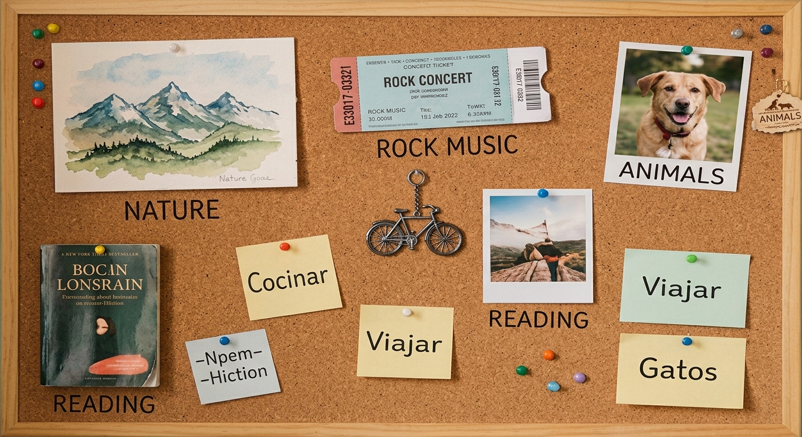
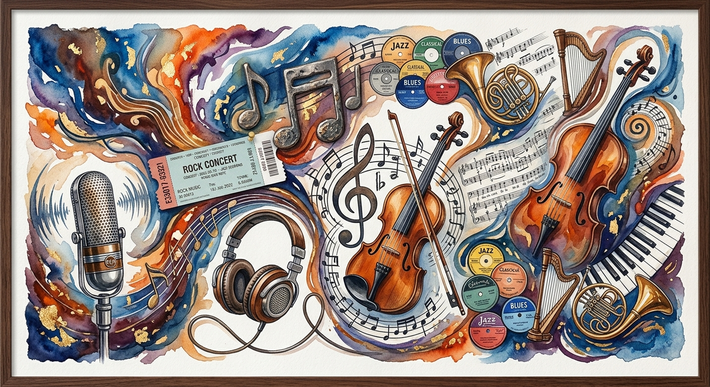
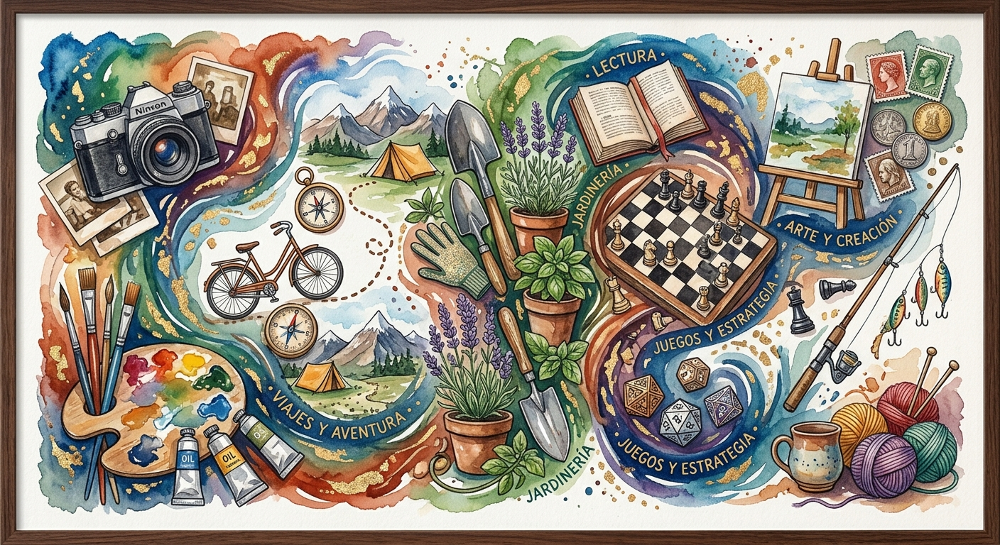

Mis gustos
- Me gusta el espagueti
- Me gustan los perros
- Me gustan los conejos
- Me gustan las tortugas
Esta es mi página personal, donde hablaré un poco sobre quién soy, mis gustos, hobbies, familia, amigos y algunas cosas importantes de mi vida.
Mi nombre es Héctor Pulido Rodriguez. Nací el 14 de agosto de 2004 en León, Guanajuato. Soy hijo de Héctor Manuel Pulido Lopez y Graciela Rodriguez Escalera.
Soy el segundo hijo de la familia, en pocas palabras, "soy el de en medio". Tengo una hermana mayor llamada Jessica Fernanda Pulido Rodriguez y un hermano menor llamado Adriel Alejandro Pulido Rodriguez.
Algo que se me hace curioso es que somos tres hermanos y nos llevamos tres años de diferencia entre cada uno.


